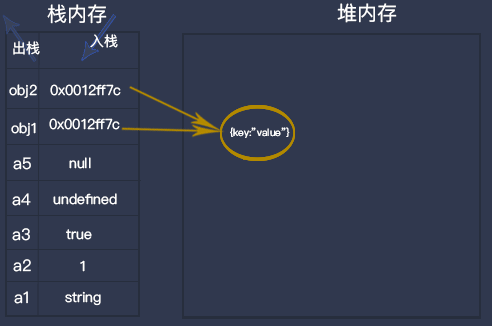

js内存
栈内存and堆内存
JavaScript中的变量分为基本类型和引用类型

function jsData(){
// 基础类型
var a1="string";
var a2=1;
var a3=true;
var a4=undefined;
var a5=null;
// 引用类型
var obj1={key:"value"};
var obj2=obj1;
}
function jsFun(){
jsData();
console.log("jsData方法里的变量全部出栈（不考虑闭包的情况）")
}
栈内存中存放基本类型变量，以及对象的指针；堆中存放对象实体
基础类型数据发生复制行为时，系统会自动为新的变量分配一个新值，放在栈内存里
栈的思想是先入后出，只能在一端操作
如果在当前函数（jsFun）域中调用了另一个函数 (jsData)，那么顺序流就会进入到你调用的函数当中，创建一个新的执行环境并且把这个环境添加到执行栈的顶部.
一旦函数 (jsData) 完成了当前的执行环境，它就会被弹出栈的顶部,这个函数的栈内存被会被销毁(不考虑闭包的情况), 把控制权返回给当前执行环境的下个执行环境。
// 引用类型
var obj1={key:"value"};
var obj2=obj1;
obj1.key="value1";
console.log(obj2);//{key:"value1"}
引用类型数据发生复制行为时，系统把指针复制过来，放在栈内存里，指向堆内存中的某个位置，通过任何一个变量修改堆内存中的数据时，另外一个变量也会相应的改变，这就是浅拷贝。那么如何实现深拷贝呢？
//定义检测数据类型的功能函数
function checkedType(target) {
return Object.prototype.toString.call(target).slice(8, -1)
}
//实现深度克隆---对象/数组
function clone(target) {
//判断拷贝的数据类型
//初始化变量result 成为最终克隆的数据
let result, targetType = checkedType(target)
if(targetType === 'Object') {
result = {}
}else if(targetType === 'Array') {
result = []
}else{
result target
}
//遍历目标数据
for(let i in target) {
//获取遍历数据结构的每一项值。
let value = target[i]
//判断目标结构里的每一值是否存在对象/数组
if(checkedType(value) === 'Object'||checkedType(value) === 'Array') {
//对象/数组里嵌套了对象/数组
//继续遍历获取到value值
result[i] = clone(value)
}else{
//获取到value值是基本的数据类型或者是函数。
result[i] = value;
}
}
return result
}